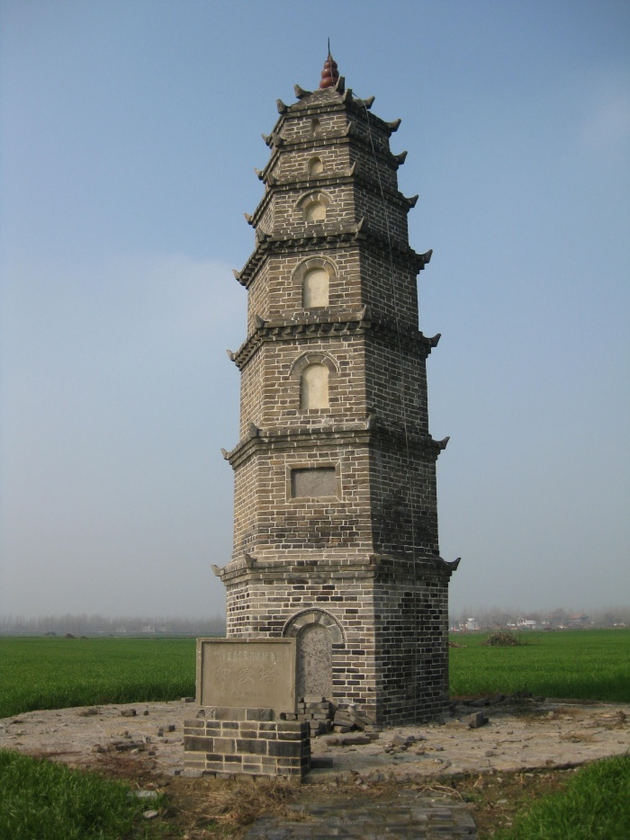

景点名片
白鹭洲水利风景区
等级：国家AAA级旅游景区

位于安徽利辛县阚疃镇，在利辛县城东南18公里，居西淝河之阳，茨淮新河南畔，是一处集自然生态、休闲度假、水利文化展示和康体运动为一体的综合性景区。景区总占地面积1800亩，其中陆地面积1200亩，水面600亩。为了实现建设高品位风景区的目标，茨淮新河阚疃枢纽管理所邀请台湾铭雅旅游规划设计院为景区编制了高起点、高规格的修建性详细规划，用于科学指导景区的深度开发建设。规划后的白鹭洲国家级水利风景区共分为水利文化展示区、商务休闲度假区、渔情民俗体验区和康体休闲运动区，并通过水上游览线和入口景观轴把四个专题分区紧密连接为一个整体，既体现每个区域产品设置的差异性，又形成整体的和谐统一。规划后的白鹭洲景区项目计划总投资为2.3亿元，共分三期，利用五年的时间进行开发建设，最终达到国家4A级以上旅游景区的标准，成为全市生态旅游的主要景区之一。
白鹭洲水利风景区指以茨淮新河阚疃枢纽工程为中心范围，包括节制闸、船闸、抽水站、灌溉引水闸、抽水站排涝闸、利阚新河排涝闸以及阜凤公路、阚新河公路桥、永幸河公路桥等区域。水是白鹭洲景区最好的名片，景区内西淝河、茨淮新河、利阚新河、白洋沟、月牙河等水系交错，老利凤公路穿境而过，把整个景区划分为四个相对独立的岛屿。茨淮新河和月牙河围合而成的三角洲小岛是白鹭洲景区的核心景区。三角洲因白鹭成群栖息而得名“白鹭洲”。景区内“闸抱水、水漫闸”，“洲衬水、水映洲”， 碧水清清，波澜不惊，渔歌互答，鹭鸟翔集，帆船络绎，垂钓者怡然自乐。一派朝阳伴春草生辉、落日与秋水一色的靓丽美景。
本景区成为安徽省内水资源和空气质量均达到绿化产业示范区A级标准的国家级水利风景区。景区内基础设施健全，有别具特色农家木屋饭馆，有静谧舒适的小旅店，已成为市民休闲娱乐度假的好去处。在景区的西三角洲建造了水杉林、杜仲林、柳林、竹林、枇杷林、桂花林等6个专题园林区，修建贯通了园林观赏路径。在水岸修筑了河堤汉白玉护栏和水上码头，购置了游艇和各种水上娱乐设施。建造了生态停车场、音乐休闲广场、塑胶球场和三处拉膜景观造型，设置了部分健身器材。景区内有别具特色农家木屋饭馆，有静谧舒适的小旅店，经过几年的建设，现白鹭洲水利风景区初见雏形，每天往来的游客络绎不绝。
禅阳寺
等级：利辛县重点文物保护单位
位于利辛县马店乡沈营村。遗址为中间略高、四周低缓的坡地，面积约5000平方米。采集有鸭嘴形、扁凿形（表面有凹槽）、圆锥形鼎足。器形有夹砂红陶蓝纹罐形鼎，腹饰宽凹蓝纹的夹砂厚壁缸等。时代稍晚的陶片，其纹饰有大方格纹、方格填线纹、小方格纹、蓝纹和绳纹等。陶色以红陶为主，黑陶较少。距地表10厘米以下，有大量红烧土，可能是陶窑或房屋遗迹。从采集标本分析，禅阳寺新石器时代文化可以分为早晚二期，其早期属大汶口文化，晚期属河南龙山文化。在遗址中曾采集到铜箭镞、蚁鼻钱、楚国货币等东周文化遗物，说明该遗址亦有东周文化层存在。
伍奢冢遗址
等级：安徽省重点文物保护单位

位于利辛县孙庙乡庙李村东北，孙庙乡庙李自然村东北500米，老母猪港南岸。遗址呈谷堆形，占地3万平方米。因伍奢冢在此而得名。冢上文化堆积层为38米，冢下为18米，冢南100米处遣仍土城墙，东西长140米，基宽3米，高出地面半米许，城墙北侧发现有古井，锅灶遗迹等。60年代，曾发现有石斧、骨针、陶网附、红烧土等。 1980年以来，地面采集大量文物标本，经专家鉴定，为大汶口文化晚期遗物。其上层夹杂着东周至汉代遗物。该处具有重要的保护价值和学术研究价值。
纪家塔
等级：利辛县重点文物保护单位
在利辛县孙集镇纪横沟沿庄北。建于清嘉庆年间（1796—1820）。是一座小型墓葬塔，塔体七层六面塔基平面呈正六边形，每边长148米，塔高约10米，仿木结构砖塔。第一层高约2.2米，其他各层高度自下而上逐层递减。二、三层外檐口及六角转变处，均砌一砖挑檐和一砖挑出飞檐。二、三层外檐口及门角转弯处，均有砖挑檐和一砖挑出飞檐。塔身第一层嵌青石碑一块，隐约可见“蒙城县嘉庆”碑文。第二层嵌青石匾，镌刻隶书“芳名永垂”，第三层至第七层东南方向，每层正中均砌有拱形佛龛。塔身无窗，塔内中空，无塔心柱，每层只有“十”字形横木交叉支撑。塔顶为绿红彩柚葫芦形按尖，中心以铁钎贯穿巩固。 全塔玲珑剔透，保存基本完好，作为世界上最小的塔被载入世界吉尼斯纪录。
阚疃天主教堂

是近现代重要史迹及代表性建筑，所在地：利辛县阚疃镇中学院内，始建于中华民国元年（1912年），顶部起脊，高约12米，砖木结构，占地面积470平方米。教堂座西面东，正面一进三开。整体建筑为中西式建筑风格。由大厅、讲台、后小楼三部分组成。大厅为独有的抬梁式+斜拉式中式建筑风格，讲台和后小楼为意大利哥特式建筑风格。教堂南侧现存砖木结构的两层神甫楼，占地面积180平方米。同类建筑如此规模的在皖北地区比较少见。它既保留了意大利西式建筑风格，又有中式建筑特点，是中西文化的有机结合体。从教堂内部结构看，既有中国古代抬梁式建筑风格，又有近现代斜拉式建筑风格。具有很高的研究价值和文物保护价值。
阴阳城遗址
等级：安徽省重点文物保护单位
位于安徽省利辛县汝集镇东北，遗址上曾发现古井、鹿角、钱纹灰砖等，文物专家认定该遗址为东周至汉代遗址。阴阳城遗址跨安徽境内淝河南北两岸，因古时称河南岸为阴，河北岸为阳，故称其阴阳城。专家认为，“阴阳城”古城址的抢救性发掘为利辛县境内“两汉”时期的历史演变、社会政治、经济文化的发展状况提供了翔实的实物资料。2013年阴阳城遗址定为第七批安徽省级文物保护单位。
红门寺遗址
该遗址在亳州市利辛县张村镇西3公里，利太公路北侧500米，后杨行政村后杨庄北侧50米处。该遗址略呈长方形，中间高，四周低，最高处高于地平面约2米，面积154600平方米。因遗址上原有一寺院而得名，相传原寺院有南北大殿，房屋百余间，和尚数百人，毁坏年代不详。1985年文物普查时发现，文化堆积保存完好。地面采集文物标本有：红陶鸭嘴形鼎足、红陶篮纹附加堆纹罐片、红陶鬲足、灰陶豆柄、绳纹陶片、篮纹陶片、素面陶片等。依据采集标本认定为新石器至汉代遗址。该遗址面积大、时代早，保存完好，具有重要的考古和学术研究价值。